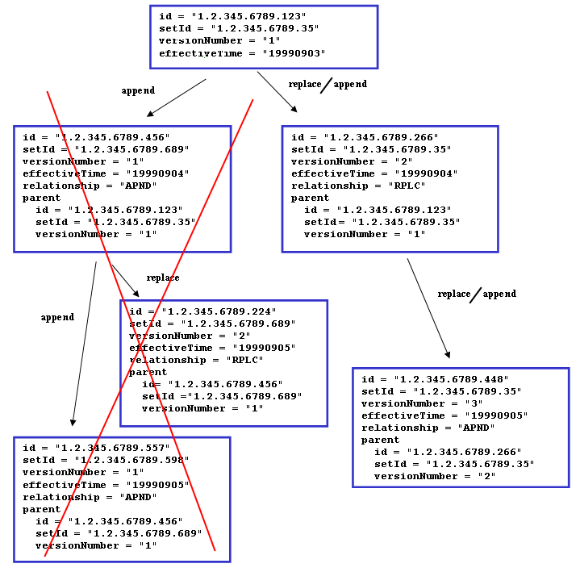

The document paradigm and CDA R2
LPR3 is based on a profiled version CDA R2 according to the needs of the LPR3 data model. The reported documents can be considered as containers of information that are bound to a single patient. Each document can contain zero to many elements, where elements can e.g. be episode of care, encounter, procedure, observation and act. The elements are arranged into sections according to CDA R2. Each element shall be marked up with the appropriate templateId in order to be evaluated and stored as part of LPR3. While elements that are not marked up with the corresponding templateId's according to the LPR3 CDA specification are permitted, they are not evaluated and as such should be avoided.
What documents can be submitted
LPR3 supports two kinds of reporting:
- Full state reporting
- Partial reporting
Full state reporting concerns the case where the client system reports an entire document covering a set of selected services and treatments chosen by the client where the state of eventual previous reported documents with the same document ID is completely overwritten.
Partial state reporting concerns the case where the client system reports a document covering a set of selected services and treatments chosen by the client where the state of an eventual previous reported document is updated. The items that are to be updated are explicitly stated within the newly reported document. Within the newly reported document items can be nullified, items can be updated or items can be added.
Documents and versioning
All reported documents (initial state and corrections) must be versioned using ClinicalDocument.id, ClinicalDocument.setId and ClinicalDocument.versionNumber. Initial versionNumber MUST be '1'. Whenever the document is appended to or replaced (collectively known as update), the ClinicalDocument.versionNumber must be incremented and the ClinicalDocument.id must unique. ClinicalDocument.setId must remain the same across all versions.
Note: Replace will replace all previous documents and addendums.
This stated use of id, setId and versionNumber ensures that no updates to documents are appended in the wrong order - a refinement of what is stated in sections 4.2.1.7, 4.2.1.8 and 4.2.3.1 - "Note that version number must be incremented by one when a report is replaced, but can also be incremented more often to meet local requirements." - CDA R2.
.
Rules for updating documents
- First submitted document constitutes the ‘base document set’.
- Update of entries and/or nullifying entries in the ‘base document set’ are contained within 'addendum documents' to the 'base document set'.
- Submitted 'addendum document's becomes part of the ‘base document set’.
- Multiple ‘addendum document’s are allowed. An ‘addendum document’ can contain multiple updated entries and/or nullified entries that points towards entries in previously submitted ‘addendum document’s or entries part of the ‘base document set’.
- Once an entry is nullified, it is permanently removed.
- Replacements can be done on ‘base document set’ level. If a document with typeCode ‘RPLC’ submitted, all previously received addendums are removed as well as the ‘base document set’. The replacing document is then the new ‘base document set’.
What rules apply and what errors can be reported and how
All documents submitted to LPR3 are validated at the following levels:
- Execute schema validation (
XSD) according to CDA R2 standard - Execute schematron validation (
SHCEMATRON) according to the profile specificed at the ART-DECOR site - Execute data coherency/conformity validation (
INTEGRITY_CHECK) - Execute drools validation rules AKA business rules (
BUSINESS_RULE)
Errors in submitted documents can be found at any of the levels stated above. If a document fails to meet level 1, 2, or 3, no further processing will be conducted and a report will be returned stating the errors in ebXML-format as used in IHE XDR. If errors are found at level 4, the continued processing is dependent on the endpoint called (see service endpoint setup)
While level 1 is static and level 2 & 3 should be considered static (variance can occur in valuesets depending on the business needs), level 4 is considered dynamic in that sense that business rules are subject to change or be deprecated over time. Level 4 is referred to as "Dyb validering" in the reporting guidelines supplied by Sundhedsdatastyrelsen.
Level 1, 2, and 4 rules are exportable in the formats XSD, Schematron, and KIE jar (kjar) files, respectively. The XSD and Schematron files does not include LPR3 assigned error codes - instead, when executed on a document, the XSD and Schematron reported errors will point out exactly where in the document the errors are and what has been violated.
Below XML illustrates how the errors at different leves are wrapped in a RegistryResponse according to IHE XDR/XDS ebXml:
<rs:RegistryResponse
status="urn:oasis:names:tc:ebxml-regrep:ResponseStatusType:Failure">
<rs:RegistryErrorList
highestSeverity="urn:oasis:names:tc:ebxml-regrep:ErrorSeverityType:Error">
<rs:RegistryError
codeContext="XSD|||cvc-complex-type.2.4.a: Invalid content was found starting with element 'assignedAthor'. One of '{&quot;urn:hl7-org:v3&quot;:assignedAuthor}' is expected."
errorCode="InvalidDocumentContent"
location="2189b2c3-fa2d-4d8e-9af4-995893b12b39^54abd790-8a4c-4a1d-b41c-8d8749f6913c|||48:23"
severity="urn:oasis:names:tc:ebxml-regrep:ErrorSeverityType:Error" />
<rs:RegistryError
codeContext="SCHEMATRON|||(DKSpecializationLevelAct): The value for code SHALL be selected from value set '1.2.208.176.2.4.18' DK Specialization Level Act Codes (DYNAMIC)."
errorCode="InvalidDocumentContent"
location="2189b2c3-fa2d-4d8e-9af4-995893b12b39^54abd790-8a4c-4a1d-b41c-8d8749f6913c|||/*:ClinicalDocument[namespace-uri()='urn:hl7-org:v3'][1]/*:component[namespace-uri()='urn:hl7-org:v3'][1]/*:structuredBody[namespace-uri()='urn:hl7-org:v3'][1]/*:component[namespace-uri()='urn:hl7-org:v3'][4]/*:section[namespace-uri()='urn:hl7-org:v3'][1]/*:entry[namespace-uri()='urn:hl7-org:v3'][1]/*:encounter[namespace-uri()='urn:hl7-org:v3'][1]/*:entryRelationship[namespace-uri()='urn:hl7-org:v3'][3]/*:act[namespace-uri()='urn:hl7-org:v3'][1]/*:entryRelationship[namespace-uri()='urn:hl7-org:v3'][1]/*:act[namespace-uri()='urn:hl7-org:v3'][1]/*:code[namespace-uri()='urn:hl7-org:v3'][1]"
severity="urn:oasis:names:tc:ebxml-regrep:ErrorSeverityType:Error"/>
<rs:RegistryError
codeContext="INTEGRITY_CHECK|||Set with id 2252b2c3-fa2d-4d8e-9af4-995893b12b39 already exists in the registry, and ClinicalDocument does not contain a relatedDocument|||SET_ALREADY_EXISTS_AND_NO_RELATED_DOCUMENT|||2252b2c3-fa2d-4d8e-9af4-995893b12b39"
errorCode="InvalidDocumentContent"
location="2189b2c3-fa2d-4d8e-9af4-995893b12b39^54abd790-8a4c-4a1d-b41c-8d8749f6913c|||//*[local-name()='ClinicalDocument' and child::*[local-name()='setId' and @root='2252b2c3-fa2d-4d8e-9af4-995893b12b39'] and not(child::*[local-name()='relatedDocument'])]"
severity="urn:oasis:names:tc:ebxml-regrep:ErrorSeverityType:Error"/>
<rs:RegistryError
codeContext="BUSINESS_RULE|||Hvis der til en diagnose er knyttet en kode for lokalrecidiv, skal diagnosen være en anmeldelsespligtig cancerdiagnose for primær kræft"
errorCode="InvalidDocumentContent"
location="2189b2c3-fa2d-4d8e-9af4-995893b12b39^54abd790-8a4c-4a1d-b41c-8d8749f6913c|||//*[child::*[local-name()='id' and @root='9827ad00-ef98-4439-bca5-9503a5b817c8' and @extension='f90b4644-8b5a-4824-972d-a6594cd05959']]|||sds:lpr:3.0.4|||14.102a"
severity="urn:oasis:names:tc:ebxml-regrep:ErrorSeverityType:Error" />
<rs:RegistryError
codeContext="BUSINESS_RULE|||Bidiagnoser skal senest være indrapporteret senest 2 uger efter kontaktens slutningstidspunkt"
errorCode="InvalidDocumentContent"
location="2189b2c3-fa2d-4d8e-9af4-995893b12b39^54abd790-8a4c-4a1d-b41c-8d8749f6913c|||//*[child::*[local-name()='id' and @root='9827ad00-ef98-4439-bca5-9503a5b817c8' and @extension='f90b4644-8b5a-4824-972d-a6594cd05959']]|||sds:lpr:3.0.4|||00.142"
severity="urn:oasis:names:tc:ebxml-regrep:ErrorSeverityType:Warning" />
</rs:RegistryErrorList>
</rs:RegistryResponse>
Using optional SOAP header to specify integrity error format
Errors found at level 3 are by default reported on the BUSINESS_RULE format, but with special rules for codeContext and location values, described in the below sections.
It is possible to receive level 3 errors on a dedicated INTEGRITY_CHECK format, which simplifies processing of BUSINESS_RULE by eliminating special cases for codeContext and location values.
The Clinical Document Architecture LPR3 definition) contains an optional SOAP header LprHeader which has an element UsingIntegrityCheckErrorReporting of type boolean.
If this boolean is set to true, then level 3 INTEGRITY_CHECK errors are reported using the dedicated INTEGRITY_CHECK format described in the below sections.
We recommend using the dedicated INTEGRITY_CHECK format for easier machine processing of the various errors returned by the service.
Here is an example of a request that has set the optional SOAP header element to true.
<soapenv:Header>
<lpr:LprHeader xmlns:lpr="urn:lpr">
<UsingIntegrityCheckErrorReporting>true</UsingIntegrityCheckErrorReporting>
</lpr:LprHeader>
</soapenv:Header>
The INTEGRITY_CHECK error in the above example is using the dedicated INTEGRITY_CHECK format. The same error presented in the BUSINESS_RULE format would have looked like this:
<rs:RegistryError
codeContext="BUSINESS_RULE|||Set with id 2252b2c3-fa2d-4d8e-9af4-995893b12b39 already exists in the registry, and ClinicalDocument does not contain a relatedDocument|||SET_ALREADY_EXISTS_AND_NO_RELATED_DOCUMENT|||2252b2c3-fa2d-4d8e-9af4-995893b12b39"
errorCode="InvalidDocumentContent"
location="2189b2c3-fa2d-4d8e-9af4-995893b12b39^54abd790-8a4c-4a1d-b41c-8d8749f6913c|||//*[local-name()='ClinicalDocument' and child::*[local-name()='setId' and @root='2252b2c3-fa2d-4d8e-9af4-995893b12b39'] and not(child::*[local-name()='relatedDocument'])]"
severity="urn:oasis:names:tc:ebxml-regrep:ErrorSeverityType:Error"/>
See issue #33 for more information.
codeContext
The codeContext attribute contains information about what the error is.
The attribute value is split into 2 mandatory segments and 1 conditional segment (placed in parentheses), with ||| as segment delimiter:
<validation type>|||<validation text>(|||<integrity error identifier>).
<validation type>can be any of the following:XSD,SCHEMATRON,INTEGRITY_CHECK,BUSINESS_RULE<validation text>contains a human readable explanation of what has been violated, in technical terms<integrity error identifier>is the conditional segment containing the unique ID of the violated integrity check and the values causing the violation on the format:
<integrity code>|||<param1>|||<param2|||...|||<paramN>- Present when
<validation type>is INTEGRITY_CHECK or when level 3 errors are reported on the BUSINESS_RULE format (see issue #33) <integrity code>is a unique code for the data integrity rule that has been violated. See below for a complete list of implemented integrity rules<param>elements contain the variable parts of an error (e.g. which encounter that already exists). The params are included in the<validation text>, but are also provided as separate segments to make it easier to machine process the error- Example:
SET_ALREADY_EXISTS_AND_NO_RELATED_DOCUMENT|||2252b2c3-fa2d-4d8e-9af4-995893b12b39
- Present when
location
The location attribute contains information about where the error is.
The value of location is split into 1 mandatory segment and 3 conditional segments (placed in parentheses), with ||| as segment delimiter:
<document id>(|||<line:column>)(|||<xpath expression>)(|||<business rule unique identifier>)
<document id>is the DocumentEntry.uniqueId - see "IHE IT Infrastructure (ITI TF-3) " (section 4.2.3.2.26)<line:column>is the line and column in the CDA document where the error is detected- Present only when
<validation type>is XSD
- Present only when
<xpath expression>is the conditional segment containing an XPath expression pointing into the document where the error is detected- Present only when
<validation type>is SCHEMATRON, INTEGRITY_CHECK, or BUSINESS_RULE
- Present only when
<business rule unique identifier>is the conditional segment containing the unique ID of the violated business rule on the format<maven coordinate>|||<rule name>.- Present only when
<validation type>is BUSINESS_RULE and the error is on level 4 <maven coordinate>is the maven coordinate of the Drools bundle jar (the exportable kjar)<rule name>is the name of the Drools rule in the kjar that raised the error.rule nameuniquely identifies the rule inside the exportable kjar file.- Example:
sds:lpr:3.0.0|||01.01has the maven coordinate sds:lpr:3.0.0 and the rule name 01.01
- Present only when
Data integrity rules
- The following is a complete list of all
INTEGRITY_CHECKerrors:- AUTHOR_INSTITUTION_NOT_FOUND
- The submission set must have an ihe-xdr Classification/Slot element with an authorInstitution attribute
- CUSTODIAN_NOT_FOUND
- Author/custodian is not matching registered relation
- CLINICAL_DOCUMENT_NOT_FOUND
- The submission must have at least 1 ClinicalDocument
- CLINICAL_DOCUMENT_ID_NOT_FOUND
- ClinicalDocument must have an id
- PARENT_DOCUMENT_ID_MISMATCH
- parentDocument extension
<parentDocumentId>must be same as extension of latest document in the set, which is<latestDocumentId> - Example
<parentDocumentId>: 4897340c-187d-4314-b38d-1b7110d64cae - Example
<latestDocumentId>: 3515058a-74a9-484f-adb6-d07378349012
- parentDocument extension
- PARENT_DOCUMENT_VERSION_MISMATCH
- parentDocument version
<parentDocumentVersion>must be same as version of latest document in the set, which is<latestDocumentVersion> - Example
<parentDocumentVersion>: 1 - Example
<latestDocumentVersion>: 2
- parentDocument version
- SET_ID_NOT_FOUND
- ClinicalDocument must have a setId
- SET_NOT_FOUND
- Set with id
<setId>not found in registry. Set must already exist when ClinicalDocument contains a relatedDocument - Example
<setId>: ef0893de-88fe-4ecd-acf0-69498b5e8f35
- Set with id
- SET_ALREADY_EXISTS_AND_NO_RELATED_DOCUMENT
- Set with id
<setId>already exists in the registry, and ClinicalDocument does not contain a relatedDocument - Example
<setId>: ef0893de-88fe-4ecd-acf0-69498b5e8f35
- Set with id
- NO_PATIENT_ID_IN_COMMON
- All CDA documents must have at least 1 patientRole id in common
- SKS_CODE_NOT_FOUND
- SKS kode
<kode>not found from<fromDate>to<toDate> - Example
<kode>: DD42 - Example
<fromDate>: 2017-02-23T14:00+02:00 - Example
<toDate>: 2017-02-23T14:00+02:00
- SKS kode
- SOR_IDENTIFIER_EXPECTED
- SOR identifier expected: participant with templateIds
<templateIds>does not have a participantRole with a scopingEntity that contains an id with root<SOR_OID> - Example
<templateIds>: 1.1.1,2.2.2,3.3.3 - Example
<SOR_OID>: 1.2.208.176.1.1
- SOR identifier expected: participant with templateIds
- SOR_IDENTIFIER_INVALID
- SOR identifier
<invalidIdentifier>could not be parsed to a long - Example
<invalidIdentifier>: 276231000016004x
- SOR identifier
- SOR_ORG_UNIT_NOT_FOUND
- SOR Organizational Unit with SorIdentifier
<sorIdentifier>not found in the registry - Example
<sorIdentifier>: 276231000016004
- SOR Organizational Unit with SorIdentifier
- MYNDIGHED_CODE_NOT_FOUND
- Myndighedskode
<kode>not found in the registry - Example
<kode>: 0750
- Myndighedskode
- INTERNAL_EOC_NOT_FOUND
- Internal Episode of Care
<extension>not found - Example
<extension>: b7023d7e-11ab-4270-9c20-3de02e908245
- Internal Episode of Care
- EXTERNAL_EOC_NOT_FOUND
- External Episode of Care
<extension>not found - Example
<extension>: b7023d7e-11ab-4270-9c20-3de02e908245
- External Episode of Care
- EXTERNAL_EOC_NOT_PART_OF_SET
- External Episode of Care
<extension>found in the registry, but it is not part of set<setId> - Example
<extension>: b7023d7e-11ab-4270-9c20-3de02e908245 - Example
<setId>: b70c5c70-11bd-42bc-a343-9730be53d385
- External Episode of Care
- EOC_ALREADY_EXISTS
- Episode of Care
<extension>already exists in the registry - Example
<extension>: b7023d7e-11ab-4270-9c20-3de02e908245
- Episode of Care
- EOC_SELF_REFERENCE
- Episode of Care
<extension>has an Episode Of Care Reference that points to itself - Example
<extension>: b7023d7e-11ab-4270-9c20-3de02e908245
- Episode of Care
- INTERNAL_ENCOUNTER_NOT_FOUND
- Internal Encounter
<extension>not found - Example
<extension>: b7023d7e-11ab-4270-9c20-3de02e908245
- Internal Encounter
- EXTERNAL_ENCOUNTER_NOT_FOUND
- External Encounter
<extension>not found - Example
<extension>: b7023d7e-11ab-4270-9c20-3de02e908245
- External Encounter
- ENCOUNTER_ALREADY_EXISTS
- Encounter
<extension>already exists in the registry - Example
<extension>: b7023d7e-11ab-4270-9c20-3de02e908245
- Encounter
- EXTERNAL_OBSERVATION_ORGANIZER_NOT_FOUND
- External Observation Organizer
<extension>not found - Example
<extension>: b7023d7e-11ab-4270-9c20-3de02e908245
- External Observation Organizer
- EXTERNAL_CONDITION_OBSERVATION_NOT_FOUND
- External Condition Observation
<extension>not found - Example
<extension>: b7023d7e-11ab-4270-9c20-3de02e908245
- External Condition Observation
- EXTERNAL_PROCEDURE_NOT_FOUND
- External Procedure
<extension>not found - Example
<extension>: b7023d7e-11ab-4270-9c20-3de02e908245
- External Procedure
- PROCEDURE_ALREADY_EXISTS
- Procedure
<extension>already exists in the registry - Example
<extension>: b7023d7e-11ab-4270-9c20-3de02e908245
- Procedure
- CONDITION_OBSERVATION_ALREADY_EXISTS
- Condition Observation
<extension>already exists in the registry - Example
<extension>: b7023d7e-11ab-4270-9c20-3de02e908245
- Condition Observation
- OBSERVATION_ORGANIZER_ALREADY_EXISTS
- Observation Organizer
<extension>already exists in the registry - Example
<extension>: b7023d7e-11ab-4270-9c20-3de02e908245
- Observation Organizer
- OBSERVATION_ORGANIZER_HAS_NO_REFERENCE
- Observation Organizer
<extension>has no Episode of Care, Encounter, Episode Of Care Marker, Condition Observation, Procedure Act, Procedure Observation or Procedure Procedure reference or entryRelationship - Example
<extension>: b7023d7e-11ab-4270-9c20-3de02e908245
- Observation Organizer
- AUTHOR_INSTITUTION_NOT_FOUND
Supported reporting strategies
Submission of reports from a client perspective can be carried out as either synchronous reporting or asynchronous reporting. In a synchronous reporting scenario, the client submitting the reports is immediately made aware of any errors that are present and either all reports are accepted or none at all, aka. transactions. Because of this nature, reported bundles should be kept as small and atomic as possible. This is also alligned with the strict nature of IHE XDR Batch oriented reporting. In an asynchronous reporting scenario, the client submitting the reports will immediatly receive errors from level 1 and level 2 (see What rules apply and what errors can be reported and how). If no errors are present on level 1 and level 2 the submission is preapproved for further processing and the client will receive a positive receipt. If errors are found at level 3 in the given asynchronous submission the error(s) will available in the accumulated error list.
Service endpoint setup
In order to support both synchronous and asynchronous reporting three services endpoints are available:
- One service endpoint supporting the synchronous scenario that does validation on level 1, 2 and 3 and reports back accordingly. If the submission contains no errors on all levels the reporting is stored. Test service is found at https://lprws-test.sds.dsdn.dk/cda-ws/DocumentRepository_Service/PatientHealthcareSaveIfNoErrorsReportingService
- One service endpoint supporting the asynchronous scenario that does validation on level 1, and level 2. If the submission contains no errors on level 1 and level 2 the reporting is stored for further processing. If errors are found at level 3, the error report is available at the prior-to-submission designated folder. Test service is found at https://lprws-test.sds.dsdn.dk/cda-ws/DocumentRepository_Service/PatientHealthcareReportingService
- One service endpoint supporting validation on all three levels but no storing - aka. dry-run validation. Service is found at https://lprws-test.sds.dsdn.dk/cda-ws/DocumentRepository_Service/PatientHealthcareValidateReportingService
All three services adhere to the same system interface, making it up to the client to decide which service constallation is the best fit.
IHE XDR
The IHE XDR service implemented as part of LPR3 will implement and act as Document Recipient and will support transaction ITI-41 but only metadata compliant with the Metadata-Limited Document Source will processed (see also Danish Metadata profile). Only SOAP with MTOM/XOP optimized content will be processed. Use of HTTP compression is encouraged.
Security
The XDR web service is accessible over HTTPS only. Use of this service mandates proper use of DGWS v1.0.1 using VOCES/FOCES rules Level 3.
Batch oriented reporting
IHE XDR defines that submissions of mulitple documents pr. request are allowed as long as all documents are concerning the same patient. Hence, batch-oriented reporting is supported for a single patient having multiple documents to be reported (see "IHE ITI TF-3" (section 4.2.1.2). Patient ID's MUST be alligned within the patientRole.id across documents within a submission.
Mapping to the logical model
The following diagram illustrates the logical data model of LPR3:

A physical ERM for the logical model can be seen here
This model is mapped to CDA and divided into the following sections:
- CDA Header
This section contains the elements
PatientandBopaelfrom LPR3. The use of elements in the header follows the national "MedCom guidelines" for CDA header usage. - Episode of Care
This section contains the main elements
ForloebElement,ForloebReferenceandForloebMarkoerfrom LPR3 that maps toDK Episode Of Care Act,DK Episode of Care Link ActandDK Episode of Care Marker Act - Encounters
This section contains the main elements
Kontakt,Betalingsoplysning,Henvisning,DiagnoseogOpholdsaddressefrom LPR3 that maps toDK Encounter,DK Payment Contract Act,DK Referral Act,DK Main Condition Observation/DK Minor Condition ObservationandDK Service Delivery Location Participant. - Procedures
This section contains the main elements
ProcedureandBetalingsoplysningfrom LPR3 that maps toDK Procedure Act/DK Procedure Observation/DK Procedure ProcedureandDK Payment Contract Act. - Observation Organizers
This section contains the main elements
ResultatindberetningandResultatfrom LPR3 that maps toDK Observation OrganizerandDK Observation Organizer Entry Reference Act.
All attributes on the elements are mapped to CDA elements and can be found in at the ART-DECOR site, marked with the description LPR3:.
For instance the code attribute of element code under the element act in template DK Clinical Theme Act[1.2.208.176.7.10.81] maps to the forloebLabel property of ForloebElement.
{kind=link}
Granularity and constraints to submitted documents
The minimum viable document that will be accepted as a valid submission is a document that adheres to the constraints mentioned in What rules apply and what errors can be reported and how - meaning that cardinalities to other elemets must be respected (as outlined in ART-DECOR), values from valuesets must be part of the valuesets (as outlined in ART-DECOR) and the use of correct template ID's as well as the volatile business rules. Any submitted document that adheres to these rules can be submitted for further processing. This means that documents can contain whatever granularity (that adhere to the rules) the submitter would like it to have regarding submission of addendums, corrections and deletions thereby providing a flexible solution that can fit all submitters.
HL7 CDA Naming convention
All CDA templates are named after the following naming convention:
- All LPR3 templates prefixed with
DK - Templates that are named
Internal<some LPR3 term><CDA type>are used as interal references within the document. - Templates that are named
External<some LPR3 term><CDA type>are used as external references to other/previous versions of CDA documents. - Template names that contains the word
Nullifyare used to delete previous registrations in previous documents. - The type of the template is found in the name of the template as the last word e.g.
ActorReference, except those that are prefixed withInternal. - The type of the template for templates that are prefixed with
DK Internalis found in the name of the template as the second last word. These templates acts as references to other instances within the same document.
For instance, using the HL7 CDA definition and following the naming convention explains that the template named DK Internal Procedure Procedure Reference concerns an internal reference to a LPR3 term "Procedure" instance in the document and is represented as a HL7 CDA type Procedure.
Notes on the use of HL7 CDA elements in a danish setting
HL7 defines procedures, acts and observations (the main building blocks of the LPR3 HL7 CDA documents) in the following terms:
Procedure:
An Act whose immediate and primary outcome (post-condition) is the alteration of the physical condition of the subject - see 3.1.15 in the specification
Observation:
An Act of recognizing and noting information about the subject, and whose immediate and primary outcome (post-condition) is new data about a subject.
Observations often involve measurement or other elaborate methods of investigation, but may also be simply assertive statements - see 3.1.13 in the specification
Act:
A record of something that is being done, has been done, can be done, or is intended or requested to be done. - see 3.1.1 in the specification
The danish term 'Procedure' can cover all three HL7 defined terms but doing so violates the standard. Hence, when reporting to LPR3, submitters of reports must differ between the types Procedure, Observation and Act. The distinction between these three types will documented using valuesets provided by Sundhedsdatastyrelsen; the valueset proc.act urn:oid:1.2.208.176.2.4.19 for Act,proc.oper urn:oid:1.2.208.176.2.4.20 for Procedure, and proc.und urn:oid:1.2.208.176.2.4.21 for Observation.
UPDATE To ease integration Sundhedsdatastyrelsen has decided that proc.oper urn:oid:1.2.208.176.2.4.20 will contain values for Act, Procedure, and Observation while the two other valuesets proc.act urn:oid:1.2.208.176.2.4.19 and proc.und urn:oid:1.2.208.176.2.4.21 will be empty allowing organizations to use the template DK Procedure Procedure for all mandatory procedure reporting to LPR3.
ID usage and referencing in LPR3
Unique identifiers can be supplied by the submitter to almost all elements using UUID v5 identifiers. Unique identifiers are needed when previously submitted entities needs to be referenced, removed or updated. If unique identifiers are not provided, internal references between the entities can be used and must be done using UUID v4 identifiers.
Act, Procedure and Observation references the Encounter/Episode of Care, which means that e.g. nullifying the Encounter also nullifies all entities that points toward the Encounter. Nullifying only the Act/Procedure/Observation that points towards the encounter removes only the entity itself and the encounter is left unchanged. The same goes for nullifying an Episode of Care which removes all Encounters and transitively all activities below it.
Rules of engagement for updating and replacing entries
In order to support updating data that tends to change more frequently than other without having to reference all data on e.g. and Encounter or Episode of Care the following semantics are supported:
- Entries that are uniquely identifiable given their UUIDv5-ids can be updated.
- If a document is submitted with
APNDasrelationship(addendum document) and a document previously has been submitted and it contains entries with identifiers equal to the those found in addendum document then the entities will be replaced with those in addendum document. - Entries referenced in this way must be located in the same
sectionand must be of same type in both the original document and the addendum document. - The replacing entry referenced in this manner replaces ALL data on the previous submitted entry, meaning that the update semantic can be considered as full state.
- The updating entry SHALL refer to the previous entry using
referencewith typeCodeRPLC. Theidof thereferenceSHALL match the entry to be updated. - The previous entry SHALL be refered to using
external[Act|Observation|Procedure].
These stated rules follows the approach outlined by IHE in the draft specification CDA Entry Content Modules